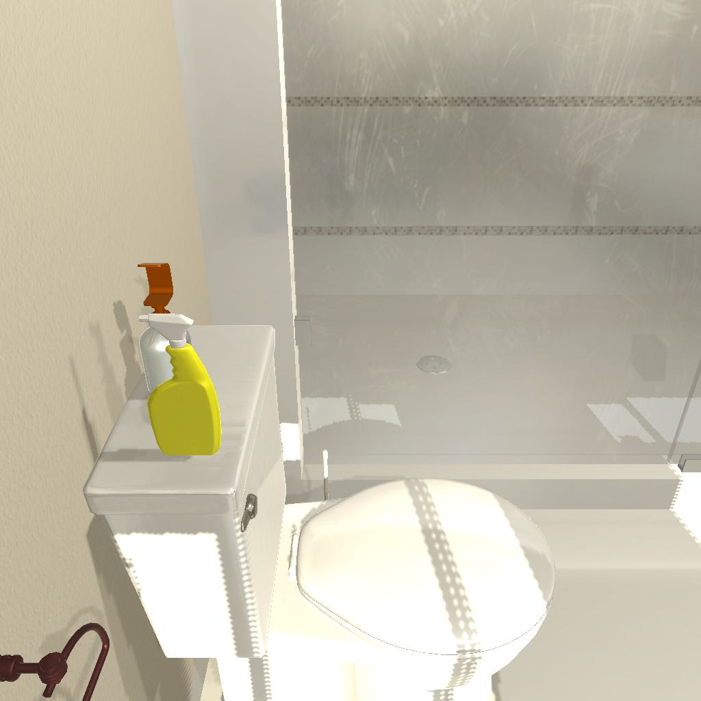

---------------------------------------------------------task: 28---------------------------------------------------------
--------------------------------------------------------------------------------------------------------------------------------------------------------------------
--------------------------------------------------------------------------------------------------------------------------------------------------------------------
Step:--------------------------------------------------------------------------13-------------------------------------------------------------------------------
----------------------------------------
VLM Prompt:
Image1:
Image2:
**Instruction**
1. Analyze the provided images to identify all visible household objects and compare the difference between images (e.h. whether the object is opened or not and taken on hand or not), focusing on those relevant to the task description "put two spraybottle in toilet."
2. Use the analysis of images and the task hint "The agent must find an object of the desired type, pick it up, find the correct location to place it, put it down there, then look for another object of the desired type, pick it up, return to previous location, and put it down there with the other object." to answer the question: what is the most reasonable action in the choices for the task description "put two spraybottle in toilet"?
3. Decide and write the answer using the template: The answer is: (i): , where i is the real number. If there is no desired object in images, search every place based on **Initial Observation** to find the object. And if no one is exactly correct, choose a similar answer.
**Initial Observation**
You are in the middle of a room. Looking quickly around you, you can see bathtub (1), bathtubbasin (1), cart (1), sink (1), garbagecan (1), sinkbasin (1), countertop (1), drawer (1-4), toilet (1), toiletpaperhanger (1)
**Answer Choices**
(1): go to bathtub 1
(2): go to bathtubbasin 1
(3): go to cart 1
(4): go to sink 1
(5): go to garbagecan 1
(6): go to sinkbasin 1
(7): go to drawer 1
(8): go to drawer 2
(9): go to drawer 3
(10): go to drawer 4
(11): go to toilet 1
(12): go to toiletpaperhanger 1
(13): take tissuebox 1 from countertop 1
(14): take toiletpaper 1 from countertop 1
(15): take handtowel 1 from countertop 1
(16): take candle 1 from countertop 1
(17): examine countertop 1
**Answer**
Let's think step by step by following the instructions.
----------------------------------------
----------------------------------------
Original Response:
Firstly, we need to identify all visible household objects in the provided images. In Image 1, we can see a spray bottle on top of a toilet tank. In Image 2, looking at the reflection in the mirror, we can see the same toilet with the spray bottle on it, and in the forefront, there's a countertop with a toilet paper roll and a candle on it. None of the objects seem to be opened or taken by hand.
According to the task description "put two spraybottle in toilet," and the task hint provided, the agent must find an object of the desired type (spray bottle), pick it up, and place it in the correct location (toilet). Since we already have one spray bottle on the toilet, the agent needs to find another one.
From the Initial Observation, we can understand the possible locations where the agent can look for another spray bottle. The locations mentioned are bathtub, bathtubbasin, cart, sink, garbagecan, sinkbasin, countertop, drawers, toilet, and toiletpaperhanger. Since we already see one spray bottle on the toilet, it is reasonable to assume that the other spray bottle might be in a similar location where cleaning supplies are kept, such as a drawer or a cart.
Considering the answer choices provided, the most reasonable action for the agent would be to look in the places where another spray bottle might be located. None of the answer choices directly state "take spray bottle," so we must choose the next logical step.
The answer is: (7): go to drawer 1. This action aligns with searching for the spray bottle in a likely location based on the initial observations. If the spray bottle is not found in drawer 1, the agent should proceed to check the other drawers or the cart.
----------------------------------------
----------------------------------------
>>> Refine Original VLM Response and Get Pure Action: go to drawer 1
----------------------------------------
-----------------------------------------------------------------
Running time: 14.300827503204346 seconds
Total Money: 14.741110000000003
-----------------------------------------------------------------
-----------------------------------------------------------------
Text Observation:You arrive at loc 7. The drawer 1 is closed.
-----------------------------------------------------------------
UNSUCCEED